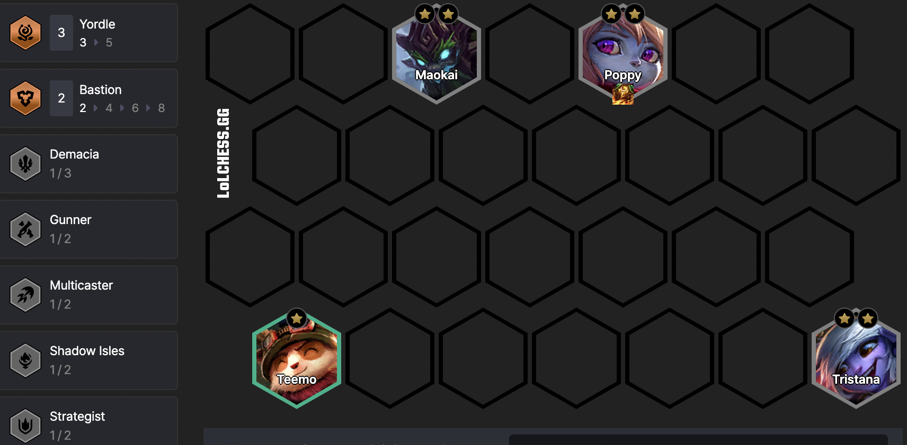
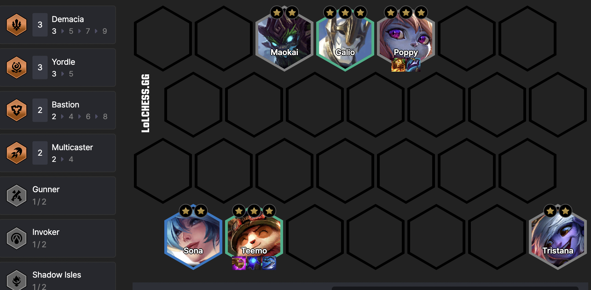
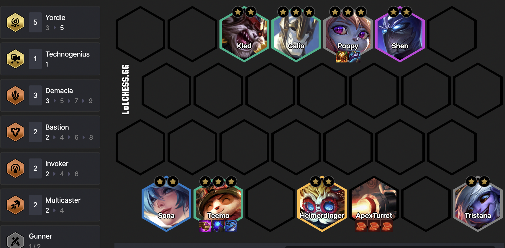

Yordle Reroll
In order to run this you're ideally going to want the Unstable Yordle Delivery augment and/or a God Willow's Grove game start. Reroll or interest prismatics are obviously great but leave you fairly vulnerable to getting run over early by tempo augment users.
God Willow's Grove is particularly helpful as it allows you to leave Tristana or Kled benched whilst achieving a 5 Yordle bonus.
- At the start of the game you'll need to move towards a board state with a stable enough frontline to mitigate loss significance.

- Once you have been able to slow roll a 3* Poppy on level 5, proceed to 6 and focus on Teemo. The board becomes a bit more flexible here, I find success running more Bastion units to support Poppy if I have been able to get a Blue Buff or damage item onto Teemo to ensure consistent DPS output.

- With Teemo complete you have hopefully been able to finish another 2-cost unit in the process, activating 4* mode. From here I seek to level pretty aggressively to level 8. With the amount of pressure you begin to exert on the lobby it's a good time to try pick up uncontested 4-cost units. There is a LOT of opportunity to flex the comp around here, so it's good so splash units they you think either have a 3* angle or create significant frustration for existing strong boards.
